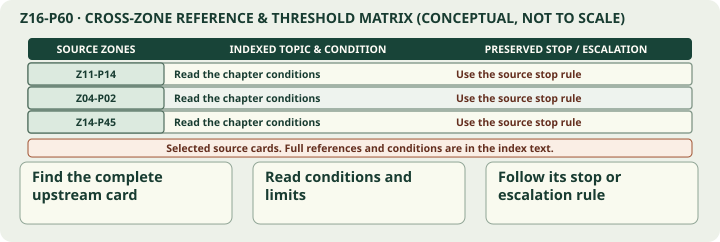

Z16-P60 · Field reference atlas · New manuscript
Encyclopedia Technical Glossary: D through F
Standardize definitions from Datum through Frostbite across navigation, botany, mycology, geology, and wilderness medicine.
When it applies · Cross-zone terminology lookup for D–F technical terms.
Equipment · Full offline reader (Z03, Z05, Z08, Z10, Z11, Z12), primary zone cards, and local emergency and agency references.

Actions
- Define D terms: Datum (geodetic coordinate grid such as WGS84 vs NAD27 that must match map and GPS, Z11); Declination (angular difference between true and magnetic north, Z11); Decurrent gills (gills running down stem, Z05); Deliquescence (cap, gills liquefying to ink in Coprinus, Z05).[A07, N02, N03, B05]
- Define E terms: Erratic (glacially transported cobble unrelated to underlying bedrock, Z08); Exclusion zone (safe setback around saw bind, trapping hardware, or hazards, Z07, Z09); Exposure (hypothermia, frostbite, or heat-illness stress, Z02, Z10, Z12).[A07, R02, K10, M11]
- Define F terms: Fascicle (bundled pine needle sheath, Z05); Fatwood (resin-saturated dead pine tinder unsuitable for friction hearths, Z03, Z08); Foliation (aligned metamorphic rock banding, Z08); Frostbite (tissue freezing requiring non-refreezing care, Z10).[A07, B16, R03, M12]
Failure recognition · Confusing WGS84 with NAD27 or erratic cobbles with local bedrock introduces navigation and geological errors.[A07, N02, R02]
Verify · Definitions align word-for-word with upstream Z03, Z05, Z08, Z10, Z11, and Z12 cards.[A07]
Stop or change course · Stop inferring operational thresholds from brief definitions; consult the full cited zone card.[A07, A10]
Evidence and editorial notes
- A07 · USGS · Collecting Rocks: Rock Classes and Mineral Property Basics (USGS GIP)
- Section: Glossary and standardized technical terminology alignment · Conditions: Defining cross-zone geology, navigation, medical, preservation, and botanical terms
Support: Consistent technical definitions prevent terminology drift across all sixteen zones (e.g., conchoidal fracture, declination, water-activity, volva, umbel).
Limitations: Glossary entries clarify terms only and do not add standalone operational instructions. · Conflicting evidence: None noted.
Editorial note: Anchors Z16 glossary cards. · Specialist reviewer: Multi-domain technical editor
Primary source · checked 2026-11-25 - A10 · FEMA / Ready.gov · Make a Plan (current web edition)
- Section: Offline reader navigation, historical lineage, and HOLD transparency · Conditions: Using the complete 16-zone offline archive, zone readers, and print proofs
Support: Navigation aids expose draft status, reconstruction lineage, open diagnostic photo needs, and pending specialist holds on every lookup path.
Limitations: Automated validation checks structure and citations only; publication remains HOLD until qualified human review completes. · Conflicting evidence: None noted.
Editorial note: Anchors Z16 offline navigation & governance index. · Specialist reviewer: Accessibility, print QA, and editorial reviewer
Primary source · checked 2026-11-24 - B05 · MyCoPortal · North American Fungal Voucher Collections Portal (Current web edition)
- Section: Separate fungal voucher collections and microscopic/macro traits · Conditions: Documenting macrofungi across North American collections
Support: Fungal taxonomy requires distinct anatomical schemas (cap, gills/pores/teeth, attachment, ring, volva, spore print, substrate, and often microscopy).
Limitations: Fungal species complexes frequently overlap macroscopically; photos alone cannot confirm edibility. · Conflicting evidence: None noted.
Editorial note: Keeps botanical and fungal schemas separate. · Specialist reviewer: Qualified mycologist
Primary source · checked 2026-11-25 - B16 · Minnesota DNR · Native Trees of Minnesota Identification Reference (Current web edition)
- Section: Native Minnesota trees: bark, buds, leaves, cones, and nuts · Conditions: Identifying oaks, pines, birches, maples, basswood, walnut, and spruce across seasons
Support: Reliable tree identification integrates leaf/needle arrangement, bud scales, bark pattern, fruit/cone structure, and habitat across seasons.
Limitations: Tree nuts and bark materials can require specific processing (e.g., tannin leaching) and remain on consumption HOLD until reviewed. · Conflicting evidence: None noted.
Editorial note: Anchors Z05 regional tree-food & bark profiles. · Specialist reviewer: Forestry botanist
Primary source · checked 2026-11-25 - K10 · USDA Forest Service · Handtools for Trail Work PDF (agency PDF)
- Section: Felling and Overhead Timber Exclusions · Conditions: Camp wood preparation and trail clearing
Support: Do not fell standing trees or work beneath hung-up limbs without specialized training and gear; restrict routine camp woodworking to small sound downed deadwood where lawful.
Limitations: Standing dead trees (snags) fail unpredictably under vibration or wedging. · Conflicting evidence: Aligns with E13 and C17.
Editorial note: Reinforces strict downed-wood-only woodworking boundary. · Specialist reviewer: Forestry safety and land management
Primary source · checked 2026-11-24 - M11 · CDC · Symptoms of Mild TBI and Concussion (2025)
- Section: Danger signs in adults; Danger signs in children · Conditions: Head impact or suspected mild brain injury; age matters
Support: Seek emergency care for danger signs such as worsening headache, repeated vomiting, altered behavior or difficulty waking.
Limitations: Spinal precautions, older-adult blood thinners, and return to activity require separate clinical or dispatcher guidance. · Conflicting evidence: See A02 claim audit for boundaries.
Editorial note: Grounds head-trauma, concussion, and spinal-motion-restriction cards. · Specialist reviewer: Neurotrauma and wilderness EMS
Primary source · checked 2026-11-25 - M12 · NIH / MedlinePlus · Animal Bites (current web edition)
- Section: Animal Bites, Rabies Exposure, and Wound Infection · Conditions: Wild or domestic mammal bites or scratches breaking skin
Support: Wash bite wounds promptly with soap and clean running water, control bleeding, and obtain prompt medical evaluation for infection risk, tetanus status, and rabies post-exposure assessment.
Limitations: Bat encounters in sleeping areas can cause unrecognized bites requiring public-health rabies consultation. · Conflicting evidence: None; aligns with CDC rabies guidance.
Editorial note: Anchors mammal-bite hygiene and public-health rabies referral. · Specialist reviewer: Infectious disease and emergency medicine
Primary source · checked 2026-11-24 - N02 · USGS · Topographic Map Symbols (agency PDF)
- Section: Topographic Map Symbols > Contours, Water, Vegetation and Boundaries · Conditions: Interpreting standard USGS 1:24,000 and US Topo map sheets
Support: Contour spacing indicates slope steepness, index contours give elevation values, blue features mark water/wetlands and standard symbols distinguish roads, trails, cliffs and marshes.
Limitations: Small terrain hazards (boulders, undercut banks, fallen timber, thin ice) fall below map contour interval resolution. · Conflicting evidence: None; anchors terrain and contour interpretation cards.
Editorial note: Explains contour reading alongside map-resolution limitations. · Specialist reviewer: Cartography and search and rescue
Primary source · checked 2026-11-24 - N03 · USGS · What is a Topographic Map (current web edition)
- Section: What is a Topographic Map > Contours and Relief · Conditions: Matching three-dimensional terrain shapes to two-dimensional contour lines
Support: Closed contour rings denote peaks or depressions (hachured), V-patterns point uphill in valleys/drainages and wide spacing marks gentle slopes while tight spacing marks cliffs or steep grades.
Limitations: Dense forest canopy or snow drifts can obscure subtle terrain features shown on the map. · Conflicting evidence: None; core topographic terrain-association evidence.
Editorial note: Supports ridge, valley, saddle and handrail terrain-interpretation cards. · Specialist reviewer: Navigation and cartography
Primary source · checked 2026-11-24 - R02 · Minnesota DNR · Minnesota Geology and Glacial History Overview (Current web edition)
- Section: Glacial drift and landscape materials · Conditions: Glacial till, moraines, outwash, and lake-plain deposits
Support: Glacial transport mixes erratics and cobbles from distant source formations across Minnesota soils and stream beds.
Limitations: Cobble location does not prove local bedrock origin or uniform internal stone integrity. · Conflicting evidence: None noted.
Editorial note: Separates erratic cobbles from bedrock strata. · Specialist reviewer: Quaternary geologist
Primary source · checked 2026-11-25 - R03 · USGS · Collecting Rocks: Rock Classes and Mineral Property Basics (USGS GIP)
- Section: Igneous, sedimentary, and metamorphic rock classes · Conditions: Field rock class screening without laboratory petrography
Support: Observable grain interlocking, layering, bedding, or foliation helps separate broad rock classes.
Limitations: Weathered rinds and fine-grained dark rocks frequently mimic other classes visually; hand-lens inspection is preliminary only. · Conflicting evidence: None noted.
Editorial note: Establishes non-destructive classification limits. · Specialist reviewer: Field geologist
Primary source · checked 2026-11-25
Source lineage · New manuscript (Z16 P20 glossary) · Classification · New manuscript.